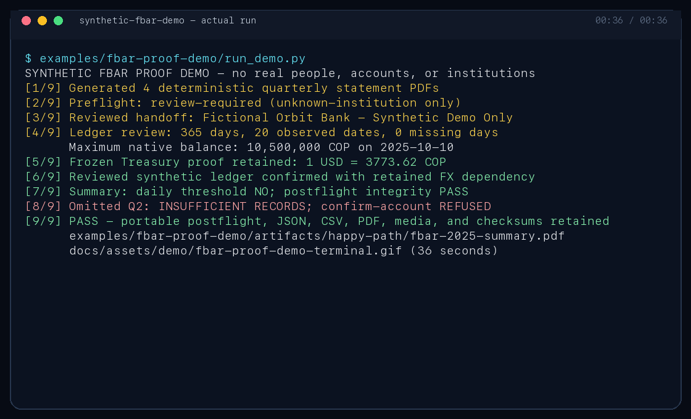
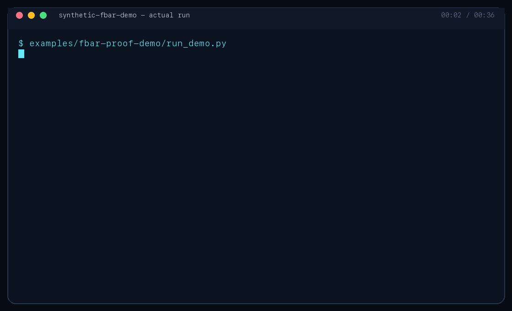
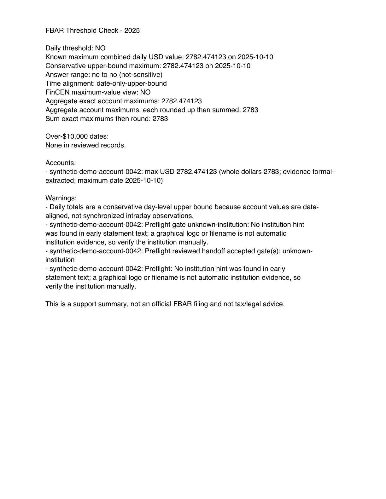

Files can look complete when they are not.
Preflight checks text, period coverage, identity evidence, currency, and file fingerprints before extraction.
Local-first · review-ready
A focused chain of agent skills for turning records you keep locally into a reviewable support packet—with source-bound intake, retained FX proof, explicit human gates, and outputs that outlive the chat.
Open source · no account required · no hosted statement intake
The problem
Statement scope, currency interpretation, coverage gaps, and conversion sources are where neat totals acquire invisible assumptions. The kit makes those assumptions visible before it produces a finished-looking result.
Preflight checks text, period coverage, identity evidence, currency, and file fingerprints before extraction.
The year-end rate travels with its source note, retained proof, machine-readable record, and checksum.
Evidence classes, lower/upper daily bounds, separate maximum-value views, and recomputation preserve what is known and what still depends on review.
The workflow
Each stage leaves a handoff the next stage can verify.
Check machine-readable text, one-account scope, statement year, institution and currency evidence, coverage, duplicates, and SHA-256 fingerprints.
Structural failures stop. Reviewable ambiguity gets an explicit, typed decision bound to the original source references—without asking for a full account number.
For a non-USD account, document the correct year-end rate, direction, retrieval context, and source artifact. Annual-average rates stay out of the FBAR path.
Keep formal extraction distinct from reconstructed or attested evidence. Report lower/upper answers when dates are unknown, then bind and recompute the portable packet.
Fictional sample artifacts
The demo is built from synthetic records for an invented account. It contains no real person, institution, account, or filing information.

Play 36-second terminal demo Stop and hide terminal demo

Install
This selects the three skills used by the FBAR workflow: statement intake, year-end FX proof, and threshold analysis.
npx in your local environment.npx skills add zztimur/skills-to-pay-the-bills \
--skill statement-intake-preflight \
--skill get-year-end-fx-rate \
--skill fbar-threshold-checkUse $statement-intake-preflight on the 2025 PDFs in .private/statements for an FBAR one-account handoff.
The third-party skills CLI sends anonymous install telemetry by default for
skills.sh ranking; it does not send statement
content. Set DISABLE_TELEMETRY=1 before the command to opt out, or use the
versioned ZIPs and SHA256SUMS from the
latest release.
This project collects no first-party telemetry.
Local data boundary
This static site has no forms, cookies, analytics, external JavaScript, or upload endpoint. The project code reads statement paths in the environment where you run it and writes artifacts there. It does not transmit statement content; a year-end FX lookup may contact a public source without sending statement data.
Store raw files in a local, gitignored directory such as .private/. Never attach them to issues, pull requests, discussions, or other shared locations.
When reporting a bug, recreate the behavior with invented names, values, dates, and identifiers. The maintainers will not ask for raw statements.
Your agent host, model provider, shell, and source websites have their own data practices. Review those separately before working with sensitive records.
Important boundary
FBAR Proof Kit creates support documentation. It does not prepare or file FinCEN Form 114, determine your legal obligations, or provide tax, legal, accounting, or financial advice. You remain responsible for reviewing source records, outputs, current official instructions, and any professional guidance you rely on.
Read the full disclaimer